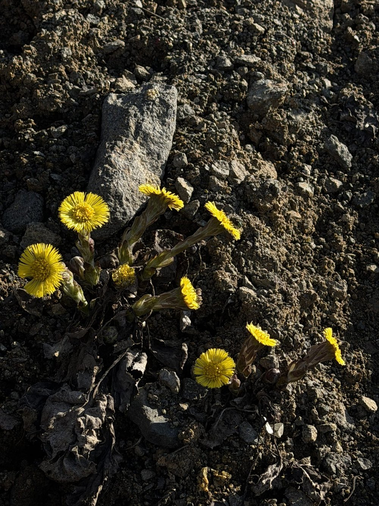

Nr. 10 · Frühblüher der Wiese
Huflattich
Tussilago farfara
Blüht vor den Blättern – und war Jahrhunderte lang das wichtigste Hustenmittel.


Blüten vor Blättern – eine Strategie
Der Huflattich macht es umgekehrt: Zuerst blühen die Stängel ohne Blätter, dann erscheinen die grossen Hufblätter. Der Grund: Im frühen Frühjahr ist der Konkurrenzdruck gering, Bestäuber sind selten und das Licht ist noch gut. Später, wenn die Nachbarpflanzen die Sonne abschneiden, braucht es grosse Blätter – aber blühen lohnt sich dann nicht mehr.
Tussis = Husten – 2000 Jahre Medizingeschichte
Der Gattungsname Tussilago kommt vom lateinischen Tussis (Husten). Hippokrates, Dioskurides, Plinius – alle erwähnen den Huflattich als Hustenmittel. 2000 Jahre lang wurde er geraucht, als Tee getrunken, als Sirup eingenommen. Moderne Wissenschaft bestätigt: Die Schleimstoffe schützen tatsächlich die gereizte Schleimhaut.
Wissenswertes & Merksätze
Phenologischer Frühjahrszeiger
Das Erscheinen der Huflattich-Blüten markiert den meteorologischen Vorfrühling – verlässlicher als jeder Kalender.
Pyrrolizidinalkaloide
Diese Verbindungen sind lebertoxisch bei Dauergebrauch. Als Gelegenheitstee unproblematisch – als Dauermedikament nicht empfohlen.
Pionier auf Rohboden
Der Huflattich besiedelt frische Erdanrisse und Baustellen als einer der ersten Pflanzen – ein Pionier, der kein Substrat fürchtet.